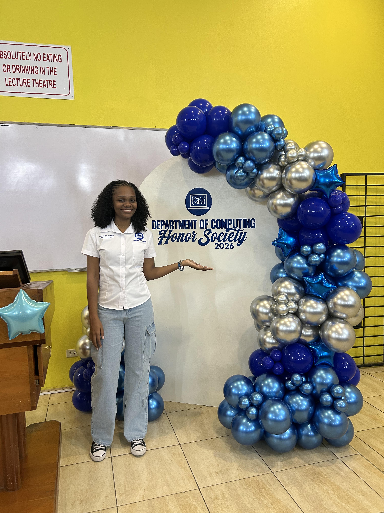

My journey as a Software Engineering Student
October 7, 2026 by Toni-Ann Smith

Being a software engineering student has given me the opportunity to learn about programming, web development, databases and many other areas of computing. Each course has helped me to understand how software is designed and developed to solve real-world problems.
I have learned to work in teams, communicate effectively, and manage my time efficiently. These skills are essential for any software engineer, and I am grateful for the experiences that have helped me develop them.